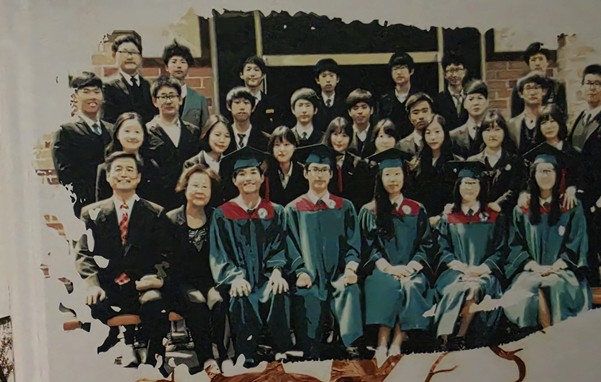

Purpose
Second Draft
Updated October 2026
Top tier ranks (1 to 2 for math, for instance) – These are the “report cards” of Korean students in a survey conducted in 81 countries. OECD Programme for International Student Assessment (PISA).
But all these statistics feel like hollow victories because there are also a set of statistics that paint a completely different picture; 22.3% of Korean teenagers report explicitly low life satisfaction, which is significantly worse than the OECD average of 17.9% while South Korean youth consistently score at the top of the OECD for educational achievements and material well-being, they routinely rank at the bottom for subjective happiness. There are even more grave statistics; 27.7% of youth reported experiencing distinct symptoms of depression.
In sum, Korean youths are not happy. Our happiness index as of 2023 stands lowest among the OECD nations. In fact, we rank No. 1 in suicide rate, 18 years straight.
In many ways, Korea isn’t exactly a fertile ground that breeds happiness. That is, life for the youths is harsh at best. Performing poorly on the Korean SAT, for instance, can mark you for life, defining your future social status literally speaking. And you get only one chance per year. Likewise, one mistake can be very costly. Meanwhile, we Koreans hear horror stories every day, like the news of cram institutes for preparing students for medical school shocked many, especially since they target elementary (and even kindergarten) school students.
This may sound unbelievable, but sadly and unfortunately, it is true.
As such, young people experience stress from all sides during a time when they are most sensitive, as they are undergoing drastic physical and psychological changes, often accompanied by severe anxiety.
Of course, there are some like Wee Class, a counseling project for schools that got jump-started in 2008, but as of 2025, only 60% of the schools have adopted this program. And even so, the reality today is that there is only one counselor per school, while there are hundreds, if not more, students.
Therefore, it is not an overstatement to say that we need to develop more such programs because my goal is to help struggling students, especially underachieving ones because I was one of them. To put it simply, I could have easily been recruited for a TV program on problematic children that is very popular today in Korea. I was not an easy child to raise.
But I was lucky. I had many mentors - good teachers from a charter school and my mother, a psychologist.

Thus, I also tried to help youths recover, or better yet, develop preventive measures before their conditions worsen. In many ways, this is why most of the lines on my CV are relevant, volunteering, coaching and mentoring hundreds, if not more, youths, including North Korean defectors and other struggling youths.
To this day, I must have counseled and carried out psychological programs for at least 200 youths (I am licensed).
However, as I work with them, the list of pressing questions increases, I realized, and thus, I am now applying for a doctoral program to conduct research on the following.
Studying Grit in Context
First, I am interested in studying motivation and grit. In fact, grit, this is a topic that I studied all throughout my Master’s. Thus, I felt very comfortable with the theories pertaining to grit when I walked into the field. However, I realized that there is a crucial element that is lacking in many of the studies on grit. That is, collectivism culture must be factored in for countries like Korea and others where others’ perception and expectation levels matter. As the focus on my research will be under-achievers, understanding the set of shared values of a particular group that my subjects belong to is the starting point. For instance, if a student hangs out mostly with under-achievers, grit and motivation to improve academically could be the very reason that they will be ostracized from their group.
This in many ways, goes against what we believed: Once coaching is provided to define and increase motivation, we believed that grit would naturally follow.
But this may not be the case. As such, I came to realize that the collectivist culture must be factored in for studying grit. Studying the environment that a student is in, and studying the characteristics of that group is crucial.
As such, to me, grit may not be a stand-alone topic. Instead, it is essential to examine the context to provide that just-right customized solution for sustained grit, especially because my focus is on the youths who face a tough environment that offers virtually no “ingredients” for success.

One such group is the immigrant group. Family as we all know is another critical “environment”. In case of the multicultural-family youths, family environment may need intervention. Many are from financially challenged families (share of parents working in 3D jobs amounts to 39% compared to 13% in case of the general population), and thus they may not have the resources needed to cope with their environment challenges.
What this told me is that community based interventions such as peer group sessions (group dynamics) and others are needed: It doesn’t suffice to say that the youths themselves need to sustain their grit without addressing the environment issue that exerts significant effect on the youths, who are still in the making and who are still very much affected by external factors.
As such, I have many questions regarding this issue. Given this dire external condition, how can I ensure that these youths are motivated and exert grit when the entire world seems to be against their success? If we place the burden on the youths alone without intervening to improve their environment, this would lead to inequality.
However, I had also argued in my master’s thesis on grit that backed up the hypothesis that grit indeed affects self-discipline and self-control (that could be utilized to overcome environment challenges and for overcoming society’s negative perception and low expectations), still when the effort to improve their environment is carried out in parallel, discourse on grit will produce greater results. In fact, my thesis claims that grit is also a predictor of academic success in schools. Grit manifested a positive effect on school adjustment (Kang Ji Sun et al., 2022; Song Min Gyo, 2022; Kim Sun Jung et al., 2023; Yoon Gi Bong et al., 2023; Lee Na Young, 2023). As grit improves, emotional intelligence also develops, enabling students to respond flexibly even in negative environments and form positive interpersonal relationships, which in turn positively influences school adjustment (Song Min Gyo, 2022).
Program Design, Development & Consultation
As such, to intervene effectively to foster grit, effective programs are urgently called for. In fact, through the Poom Family Project carried out in collaboration with the Welfare Foundation, early intervention is proven to be crucial for proactively addressing potential maladjustment and deviant behaviors in adolescents who come from financially marginalized family, educational, and psychological environments. This is because it takes several times more time and effort to help maladjusted adolescents recover and grow after the critical adolescence period.
To address this, I implemented psychological coaching, very much like the motivational interviewing that aims to strengthen individuals' psychological capacity so that they can take the lead in their own growth – which demonstrated that intervention programs are effective. For instance, my family’s psychological center is currently collaborating with a major satellite city’s social welfare office and the national fund office, Office of Education to coach the subjects who are experiencing academic anxiety, helplessness, and low motivation.


For the sessions I conducted, I utilized the curriculum, coaching tools (role-playing) and the gamification tools I developed; if nothing else, there is nothing like one-side lectures that will guarantee loss of attention, while virtually everything becomes fun when gamified. But more than anything, I used these means because most of the subjects facing the above-mentioned conditions tend to hide behind silence.
And as expected, these tools really were very effective indeed and I started to witness changes. Likewise, I wish to conduct in-depth research to develop many more creative, effective coaching tools.
Diversity & inclusion
To increase happiness, creating an inclusive culture both in the communities and schools is essential. In case of bi-ethnic youths, for instance, who face ethnic discrimination have around four times higher probability of suffering from severe depressive symptoms.
This goes for anyone considered “different” in this nation that still believes that we are one people when in fact significant share of all the Korean last names were naturalized names.
Likewise, in case of another group, the North Korean refugee-youths, 20% of young defectors report experiencing bullying or harassment. Sadly, to avoid being stigmatized or ostracized, 48% of North Korean students don’t reveal their identity to their classmates.
As for me, as I worked with many such youths, I heard their stories, which confirm that these statistics are indeed correct.
This is what I wish to change. And for this, I need to learn to convince how diversity pays, instead of merely considering it as something to tolerate. Also, I wish to develop set of programs to increase inclusion. In the longer run, I would also need to seek ways to increase collaboration with the governments for instance as policies are often the change drivers.
Study of happiness

My other interest is the study of happiness, which in Korea is still considered a new, less tapped area. As mentioned earlier, South Korea is known for its intense focus on education, and the perseverance and passion students show are remarkable. However, life satisfaction and happiness among students remain paradoxically low.
To explain this, Professor Datu from the University of Hong Kong, a country where a similar pattern exists (strong persistence in education but low happiness levels), suggests that in collectivist cultures—where individuals are highly sensitive to others' expectations, interests, and contextual factors—'adaptability to situation' is essential. He argues that to study grit in a way that positively correlates with happiness, we need to include 'adaptability to situation' as a third subfactor of grit.
To this, I would like to add the cultural element as well while conducting research at your program because of another interesting study. In Korea, researcher Lee Soo-ran and colleagues found that 38.1% of university students showed signs of 'obsessive grit'—driven by compulsive passion. They argue that this contributes to the low happiness levels observed. Instead, they propose the need for 'harmonious passion' (like adaptability to situation) where individuals pursue activities autonomously and with the flexibility to engage in other areas of life. They suggest that a Korean-style grit scale should incorporate this concept.
However, upon reviewing the Korean grit scale, I found that it lacked sufficient coverage of both harmonious passion and adaptability to situation. As a result, I chose to conduct my research using Professor Datu's scale from the University of Hong Kong and was able to obtain more meaningful results compared to the traditional two-factor model. Although still preliminary, I also developed a happiness habits scale as a small thesis project during my undergraduate studies.
I wish to continue to develop this type of measure that factors in the variables that may be culture-specific in your program.
Counselor Training
Last, but not least, I am also interested in counselor training, as I experienced the challenges as well. There were times when I felt emotionally drained, but I persisted, thinking about my younger self. But that is me – personal motivation alone may not suffice. Thus, I will need to study not only their motivation, but also the comprehensive set of systems and processes needed to ensure their mental health, as healthy counselors provide healthy counseling.

As a last note, my conviction is that people can change for the better, and I want to ensure that I play a part as a professor/scholar who continues to work with the youths.